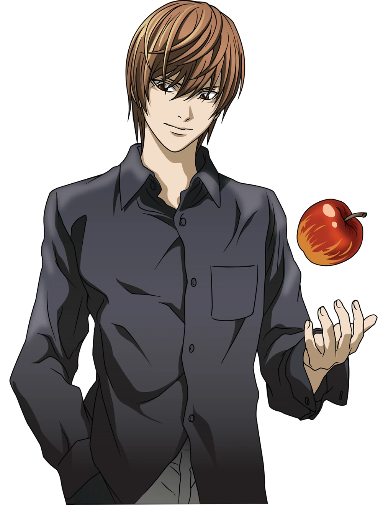

Light YagamiLight Yagami es el protagonista principal de la serie Death Note. Fue el primer hijo de Soichiro y Sachiko Yagami, además es el hermano mayor de Sayu Yagami. Fue propietario de la Death Note, que es un libro en el que si escribes el nombre de una persona esta persona muere de un paro cardiaco. Light encuentra la Death Note y la utiliza para matar a los delincuentes que principalmente aparecían en las noticias, luego comenzó a matar criminales. Después pasó a ser conocido en Japón bajo el nombre de Kira (basado en la pronunciación japonesa de la palabra inglesa Killer, "asesino"). Se unió a la policía para acercarse a su enemigo L y acabar con él. Light se caracteriza como un chico aburrido, valeroso e inteligente. Tiene 17 años al inicio del anime y del manga, a pesar de ser joven, confia en su propio sentido de la lógica y creatividad como es en lo que respecta a los demás. Al comienzo de la historia se nos presenta como una persona que a pesar de su inteligencia y de sacar buenas notas en su escuela, está frustrado por la iniquidad que habita en el mundo. Creyendo que el mundo está "podrido", desea un medio por el cual pueda promulgar su justicia y voluntad para purgar el mundo de todo mal. Light usa la Death Note con el único fin de limpiar al mundo de la delincuencia y las injusticias. La meta final de Light es crear un mundo que esté libre de criminales y que esté poblado sólo por personas que el halla juzgado como responsables, trabajadoras y de bien, convirtiéndose así mismo en el "Dios del nuevo mundo". Sin embargo, a pesar de lo noble de sus propósitos, sus métodos están lejos de ser aprobados por la sociedad y las autoridades, considerándolo un asesino en serie maniático e infantil, que sólo busca satisfacer su propio ego. Light corra lejos hasta perder a la policía, con lo que le queda de vida llega a otro almacén abandonado, se acuesta en unas escaleras sufriendo su agonía. Ryuk decide acabar de una vez con la vida de Light, justificándolo diciendo que sabe que si la policía llega y lo atrapa, lo meterían a la cárcel de por vida, y que él no quiere quedarse ahí esperando a que Light se pudra en la cárcel, y que es muy aburrido pasársela viendo a alguien en prisión sin hacer nada, así que, sin querer sufrir mas aburrimiento, Ryuk mata a Light, escribiendo su nombre en su Death Note lo que acaba con su vida con un paro cardíaco a la edad de 23, el 28 de enero de 2010 |  |
| ____________________________ |